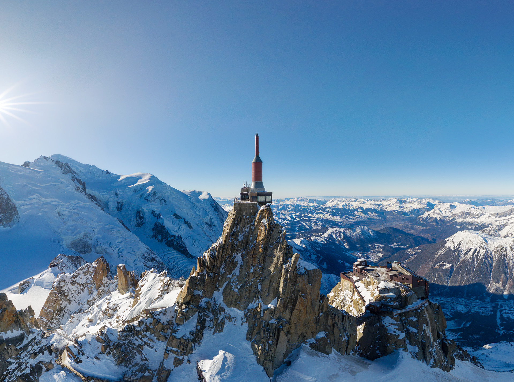
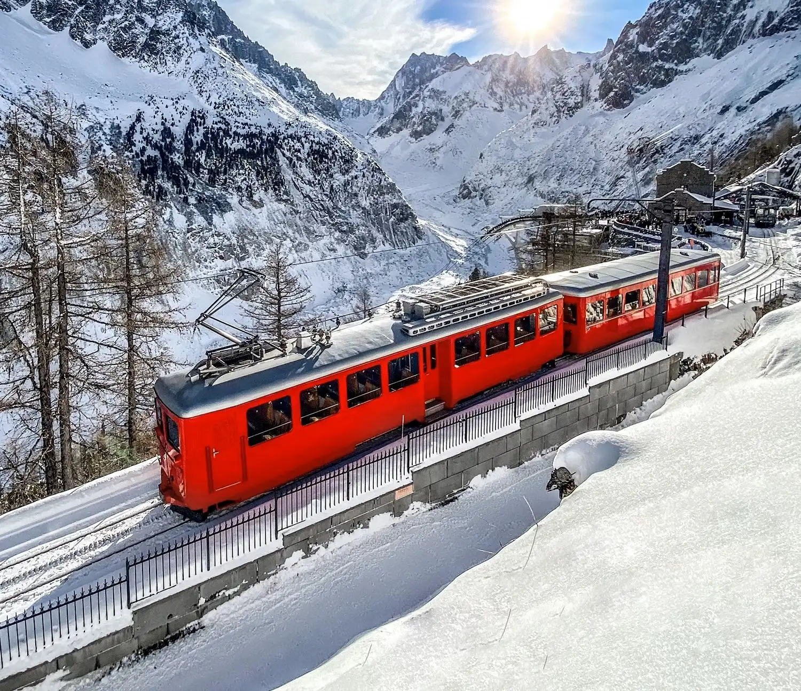
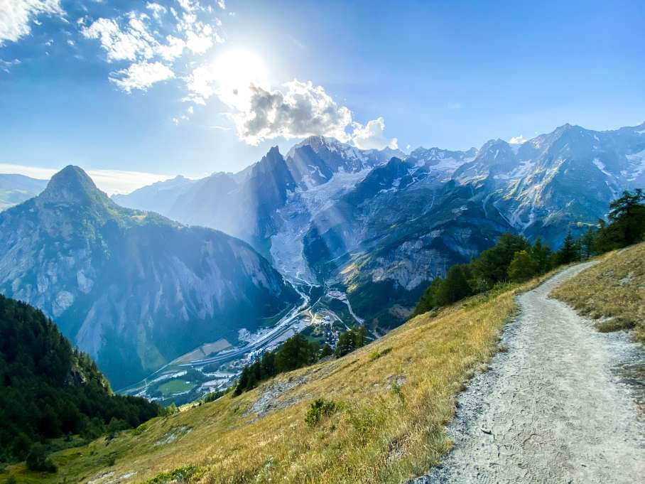

Chamonix-Mont-Blanc et son identité alpine forte, où l’héritage de la montagne se conjugue avec l’excellence et l’aventure contemporaine.
Chamonix Mont-Blanc

L'Aiguille du Midi
Prenez de la hauteur jusqu’à l’Aiguille du Midi, aux portes du ciel. Face au Mont-Blanc, les sommets se dévoilent dans toute leur grandeur. Sensations vertigineuses, silence absolu et vues infinies… Ici, l’émotion atteint des sommets.
Le train du Montenvers
Embarquez à bord du mythique train du Montenvers pour un voyage hors du temps. La Mer de Glace s’étend sous vos yeux, majestueuse et impressionnante. Glace éternelle, paysages grandioses et héritage alpin… Ici, la montagne raconte son histoire.


La randonnée
Partez à la découverte des sentiers du Mont-Blanc, au cœur d’une nature préservée. Forêts, alpages et sommets mythiques rythment chaque pas. Air pur, effort maîtrisé et liberté totale… Ici, chaque randonnée devient une aventure inoubliable.